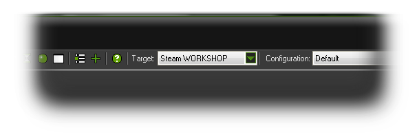

Steam Workshop
Here you can find all the information about the Steam Workshop target module.
If your copy of GameMaker:Studio has been bought through Steam, you will see that there is an additional target module for compiling to apart from the standard Windows and MacOSX targets:

When running your game through GameMaker:Studio normally (or in debug mode), this target module functions exactly the same as the standard Windows compiler and will permit you to play and test
your game in the windows workspace. However, when you decide to compile you game using the Create Executable command from the file menu or the icon from the toolbar you will be creating a special
file which will be uploaded directly to the Steam Workshop.
What Is Steam Workshop?
Steam Workshop is basically a platform for user-generated content, where you can upload your games and have others play them, rate them and comment on them. The games you upload can be
works in progress or finished games, but they cannot be for sale as the nature of the Workshop is to offer user created content for free. You should also be aware that the games uploaded to the workshop cannot
make use of extensions in any form as Steam consider them to be a security risk. You can have included files however, and you need not worry about whether your games will work on MacOS, Ubuntu (Linux)
or Windows as that side of things is handled by Steam.
Uploading To The Steam Workshop
When you select the Create Executable for Steam Workshop, a new window will open where you must specify certain details that Steam require for you to upload to their site:
 At the top of the window, you should add the name of your game (this is what people will see displayed on Steam), then upload a screen shot to show something of your game itself. The screen shot may appear
stretched or distorted in this window, but once uploaded it will appear as it should to those that visit the Workshop page for your game. You should then select the visibility of your game which can be either:
At the top of the window, you should add the name of your game (this is what people will see displayed on Steam), then upload a screen shot to show something of your game itself. The screen shot may appear
stretched or distorted in this window, but once uploaded it will appear as it should to those that visit the Workshop page for your game. You should then select the visibility of your game which can be either:
- Private - The game will only be visible to you, Steam administrators, and anyone marked as as co-creator.
- Friends Only - The game will only be visible in searches to you, your friends, and Steam administrators. However, anyone with a direct link may also view it.
- Public - The game is available to the general public through the Steam Workshop.
After that you can add a description of your game, which can be as long or short as you wish, and finally, at the bottom, you can add search tags too. The search tags are limited to a maximum of three, where
the first one must be the "Genre" of the game which you select from a drop-down menu. The other two tags are used for giving the description and can be cutom tags that you input (click the box and write the
tag) or they can also be selected from a long list of pre-made descriptive tags accessed through another drop-down menu.
When you are happy with the information, you can click on the button labeled Create and your file will be sent to the Steam server automatically. In a few minutes (depending on your internet speed)
you should be able to acces the file on your Steam account page where you can also modify all the details that you have included when uploading, including adding more screen shots, changing the visibility and
editing the description (if you have the Steam client open, you can get to your files through the Community > Workshop > Your Workshop Files).
Playing Your Games
Once you have uploaded a game, to be able to play it you must first subscribe to it by clicking on the Subscribe button of the Steam Workshop page for your games, which can be found in the
Community section of the Steam Client, on the right under the Actions menu. To play other games that are available on the Workshop from other users you must also subscribe to them,
and all subscribed games will then appear in the Steam Player, which will update as you subscribe to them to show all the available games.
Updating Your Games
Once you have uploaded your game to the Workshop, youmay need to update it or wish to change the screenshot choosen for the description etc... This can be done easily by loading the game into
GameMaker:Studio and then choosing the Steam Workshop compile target and hit the Create Executable just as you would when you originally created the game. This time however you
should press the button marked "Update Game", which will download all the details of the games you have already uploaded to the Workshop (this may take a few moments depending on the number of
games that you have there). The following dialogue will show you the progress:
 Once all game details have been downloaded the previous "Update Game" button will now show a drop-down list of all of your games. Selecting any one of them will show the previously uploaded screenshot,
description and tags which you can then change as you wish. Once finished you should then press the Create button to re-upload the game to the Workshop.
Once all game details have been downloaded the previous "Update Game" button will now show a drop-down list of all of your games. Selecting any one of them will show the previously uploaded screenshot,
description and tags which you can then change as you wish. Once finished you should then press the Create button to re-upload the game to the Workshop.
© Copyright YoYo Games Ltd. 2013 All Rights Reserved